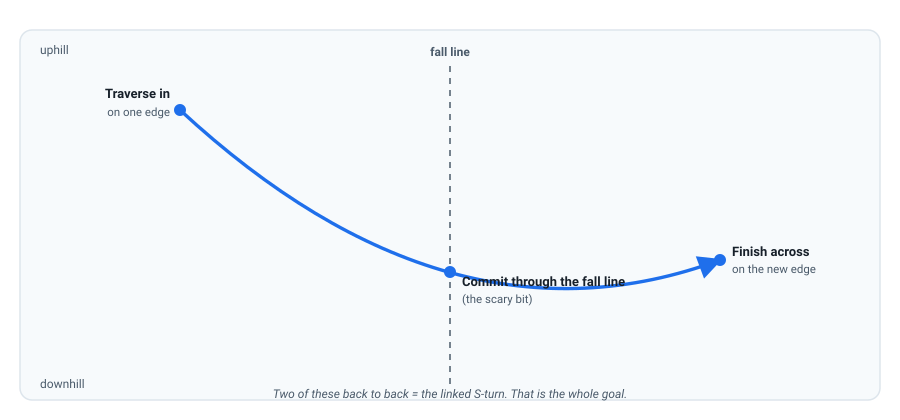

Your First Turns: C-Turns to Linked S-Turns
This is what the whole course was for. Everything so far has been a single ingredient; now you combine them. Link turns down a green run and you have achieved the mission of this workspace.
The C-turn
A C-turn is one turn, start to finish: from a traverse, you change edge, let the board cross the fall line, and finish travelling across the slope on the new edge. Drawn from above, it looks like a C (or a J). Here is the whole course in one sentence:
Initiate: extend and let your body cross over the board (Lesson 4), steering with the front knee (Lesson 5) — the edge change. Control: flex, press the new edge, and ride the arc through the fall line. Complete: extend across the slope and let pressure build until you slow.

Do it both ways, then link
- Heel-to-toe C-turn. Start traversing on your heel edge, initiate the edge change, cross the fall line, finish on your toe edge.
- Toe-to-heel C-turn. The mirror image. Do this until both directions feel equally doable — most riders find one direction much easier at first.
- Link two. As one C-turn finishes across the slope, immediately begin the next. That's your first S-turn.
- Link a run. Keep going all the way down a green. The tracks should be S shapes, not one long skid.
The scary moment — and how to pass it
Every turn has one moment where the board points down the fall line and you pick up speed before the new edge engages. Beginners flinch here, and the flinch creates the fault:
- Don't lean back. Leaning back loads the tail and stops the turn. Trust the stance from Lesson 2 — stay centred, hips over the board.
- Commit through it. Keep pressure toward the front of the board (Lesson 4) so the front edge engages early. Hesitating across the slope just leaves you stuck in the traverse.
- Look where you're going, not at your feet. Your body follows your eyes; on a snowboard that's almost literal.
- Warm up with garlands (Lesson 6) — both edges — for five minutes.
- One C-turn each way. Stop, reset between them. Get both directions clean before linking anything.
- Link two S-turns. Then four. Then ride a whole short run linking continuously.
- Give yourself one cue per run. Run one: "front knee first". Run two: "press the front foot". Run three: "look ahead". Chaining cues in your head is what makes the movements automatic.
Check your understanding
1. The scary moment of a turn is passing through the…
As the board crosses the fall line it accelerates before the new edge bites. That instant is where beginners flinch — and where committing to the new edge is what makes the turn work.
2. Where should you look during a turn?
Your body follows your eyes. Look at the place you want to end up, not at your feet — it's the single cheapest fix in snowboarding.
3. The finish of one turn becomes the next turn's…
Linking is exactly this: the completion of one turn folds straight into the initiation of the next, with no stop in between. That's what makes an S.
4. Leaning back during a turn makes you…
Weight back loads the tail, the front edge goes light, and the board stops turning — you end up skidding straight. Stay centred and press forward instead.
Watch it, don't just read it
- How to Snowboard: A Beginner's Guide — Part 3 PSIA-AASI · the official walk-through of garlands → C-turns → linked S-turns.
- Malcolm Moore — beginner playlist Watch him coach real first-timers from their first slide to linking turns.
- Snowboard Pro Camp Ex-Whistler instructor · lots of beginner C-turn and linking-turn breakdowns.
Watch the AASI/PSIA Beginner's Guide to Snowboarding, Part 3 (YouTube), which ends exactly where this lesson does: linking C-turns into the S. Then, if you can, get one pair of human eyes on your riding — see below.
Your teacher is right here
This is the moment where a single lesson file hits its limit: nobody can see your turns but you. Describe what's happening ("my toe-side turn stalls", "I catch an edge at the top of every turn") and I'll diagnose it. And seriously consider one drop-in lesson at the dome now — external feedback is the one thing I can't give you.
Snowboarding Fundamentals · lessons/0007-turns-and-linking.html